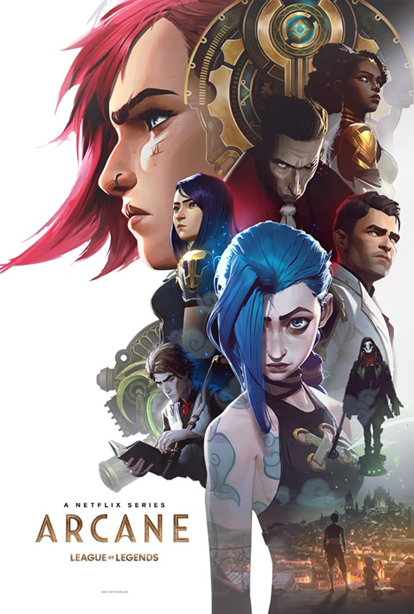

As séries de televisão e streaming conquistaram um espaço central na cultura contemporânea, oferecendo narrativas longas e envolventes que permitem ao público acompanhar a evolução de personagens e histórias de forma mais detalhada do que nos filmes. Esse formato cria vínculos emocionais mais duradouros com a audiência.
Desde os seriados clássicos exibidos semanalmente na TV até as produções originais de plataformas digitais, as séries sempre refletiram comportamentos e mudanças sociais. Muitas vezes, elas funcionam como um espelho da sociedade, abordando temas atuais como política, tecnologia, diversidade e relações humanas.
A ascensão das plataformas de streaming, como Netflix, Amazon Prime Video e Disney+, revolucionou a forma como consumimos séries. Com a possibilidade de assistir episódios inteiros de uma vez (binge-watching), os espectadores têm mais controle sobre sua experiência de visualização. Isso também incentivou a criação de conteúdos mais ousados e experimentais, já que as plataformas não estão sujeitas às mesmas restrições das emissoras tradicionais.
Hoje, as séries competem diretamente com o cinema em qualidade técnica, investimento e alcance global. Com produções que exploram desde a fantasia até o documentário, elas oferecem diversidade e profundidade narrativa, consolidando-se como uma das formas mais importantes de entretenimento da atualidade.
Seleção de séries:
Trhiller: Série "Breaking Bad" (2008) - Criada por Vince Gilligan, acompanha a evolução de um professor de química.

Animação: Série "Arcane" (2021) - Baseada no universo do jogo League of Legends, a série é elogiada por sua animação impressionante e narrativa envolvente.
Fantasia: Série "Game of Thrones" (2011) - Baseada nos livros de George R.R. Martin, a série é conhecida por sua complexa trama política e personagens memoráveis.
Ficção Científica: Série "The 100" (2014) - Baseada na série de livros de Kass Morgan, a série explora temas de sobrevivência e moralidade em um mundo pós-apocalíptico.
Comedia Dramática: Série "On My Block" (2018) - Criada por Lauren Iungerich, Eddie Gonzalez e Jeremy Haft, a série mistura humor e drama ao seguir um grupo de adolescentes em um bairro difícil.
Trailer em destaque:
Trailer da série "Alien: Earth" (2025), nova produção que expande o universo da clássica franquia Alien.


.jpg)